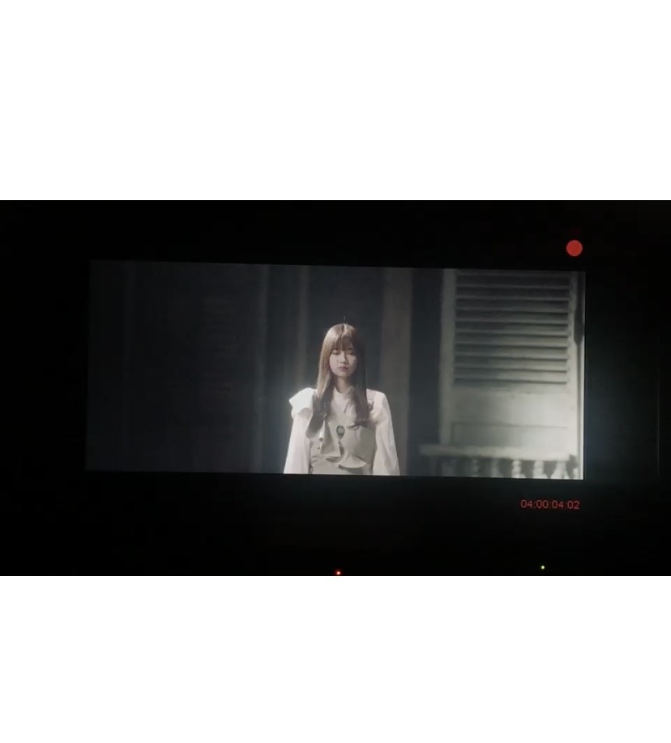
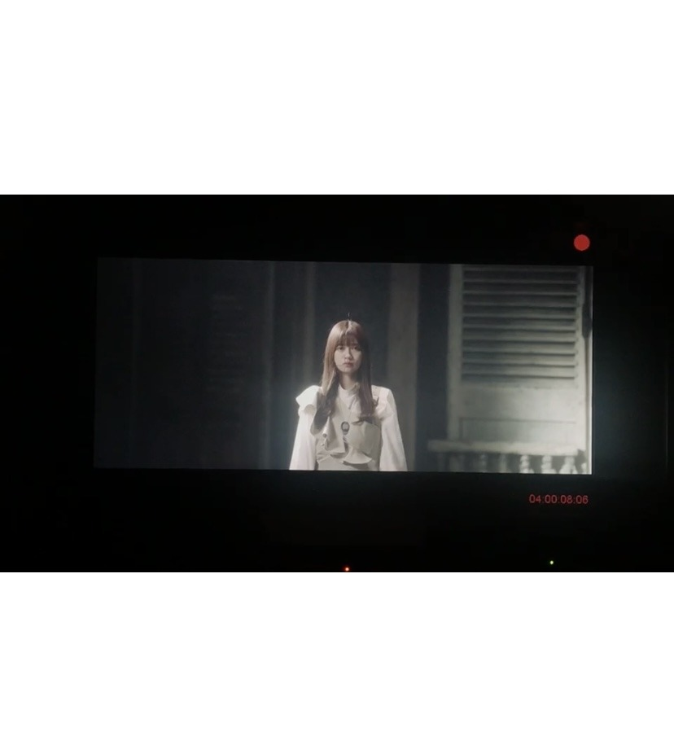
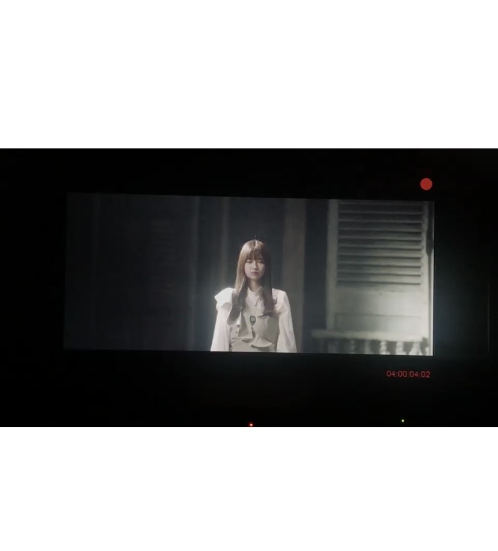
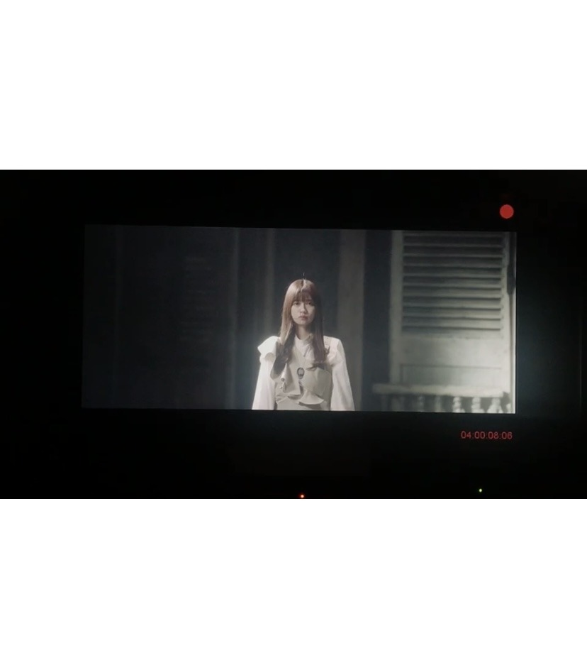

2021/0222Mon白
最近いろんな現場で
色んな方から
アイシャドウとかはせずに
マスカラをたっぷり塗って
真っ赤なリップをたっぷり塗って
海外ぽいメイクも似合いそうだねーと
言って貰う事が何故か多く
凄く凄くチャレンジしてみようーっと言う
気持ちになっています。！
何事も大きい小さい関係なく
チャレンジすることと
その気持ちは大切ですね。！
皆さんは何かやってみたいことありますか。？！
乃木坂46
お誕生日おめでとうございます。✨
こんなに一緒に乃木坂46として過ごす事を
私は想像も出来ませんでした。
本当に沢山の人と出逢うことが出来ました。
いろんな出会いや別れ全て大切な経験です。
そして、冒頭にも書いたように
これからも
小さいとか大きいとかそう言うもので判断せず
いろんなものに挑戦してみたいです。
前夜祭ありがとうございました。✨
改めて凄いことをしてきたんだなと感じて
胸が熱くなりました。
二期生として大変なことも沢山ありましたが
二期生として乃木坂46に加入した事を
凄く凄く誇りに思える日でした。
写真は確かですが
5th year birthday Liveの本番を終え
すぐにロケに行ったこちらの写真を、、、
ライブも大変でしたし
色々考えることもありましたが
ライブを終えても
ドキドキと不安を感じていた懐かしい
一枚です、、、
Abemaみて頂けましたか
個人的にさっちゃんの歌を歌う機会があったのですが
元の歌を知らなかったのですが、、、
皆さんはちゃんと歌えますか。？！



最後まで読んで下さり
ありがとうございました。✨
明日も怪我や体調には気をつけつつ
楽しみたいと思います。✨
色んな方から
アイシャドウとかはせずに
マスカラをたっぷり塗って
真っ赤なリップをたっぷり塗って
海外ぽいメイクも似合いそうだねーと
言って貰う事が何故か多く
凄く凄くチャレンジしてみようーっと言う
気持ちになっています。！
何事も大きい小さい関係なく
チャレンジすることと
その気持ちは大切ですね。！
皆さんは何かやってみたいことありますか。？！
乃木坂46
お誕生日おめでとうございます。✨
こんなに一緒に乃木坂46として過ごす事を
私は想像も出来ませんでした。
本当に沢山の人と出逢うことが出来ました。
いろんな出会いや別れ全て大切な経験です。
そして、冒頭にも書いたように
これからも
小さいとか大きいとかそう言うもので判断せず
いろんなものに挑戦してみたいです。
前夜祭ありがとうございました。✨
改めて凄いことをしてきたんだなと感じて
胸が熱くなりました。
二期生として大変なことも沢山ありましたが
二期生として乃木坂46に加入した事を
凄く凄く誇りに思える日でした。
写真は確かですが
5th year birthday Liveの本番を終え
すぐにロケに行ったこちらの写真を、、、
ライブも大変でしたし
色々考えることもありましたが
ライブを終えても
ドキドキと不安を感じていた懐かしい
一枚です、、、
Abemaみて頂けましたか
個人的にさっちゃんの歌を歌う機会があったのですが
元の歌を知らなかったのですが、、、
皆さんはちゃんと歌えますか。？！


最後まで読んで下さり
ありがとうございました。✨
明日も怪我や体調には気をつけつつ
楽しみたいと思います。✨
2021/02/22 20:48
コメント(522)
やぁ
メールありがとう(´▽｀)
遅くまでお疲れ様(^^)/
お腹すいた？
ちゃんとご飯食べるんやで～(´ー｀)
俺はもう食べたよ。
豚汁と～豚肉の塩焼きと～コメントにも書いたけどアカガレイの煮つけ(´▽｀)
やっぱ煮つけは美味しかった(*´з`)
きっとまた後で(｡･ω･)ﾉ
蘭世こんばんは❗
26日に放送された武道館アンダラ３日目観たよー！
丁度僕が実際に観に行けた日だった。
僕は５年前の武道館の記憶も思い起こしながらだったけど、今回も蘭世はすっかり大人っぽくなって綺麗さを更新してくるし、個人のパフォーマンスも全体としてのパフォーマンスも最高で、好きな楽曲が怒涛の如く押し寄せる圧巻のライブだった！
蘭世の滑走路の時のアオリやその女の演出も心に残ってるなあ。
人数制限があったとはいえ、会場で久しぶりにサイリウムの海を見られたのは感動したし、座席の間隔があったせいか、後の(今回の)映像で初めて自分のサイリウムが「あれだ！」って確信出来たし(笑)、当日も現地で、前の席の人の掲げたタオルで視界がカットされるということもなかったので、それがかえって良かったかも知れないと思った。
そして、声は出せなかったけれど、ステージからの熱量もファンの熱量も物凄いものが伝わってきたし、最高のライブだったよー(^^)！
お試し中も観たよー！
蘭世のMC初回から楽しかったし、拓さんにも色々引き出してもらいながら乃木坂メンバーの魅力を出して行けるといいね！
どんどん楽しい番組にしてね！
蘭世ならではのスタイルを大事にこれからも頑張ってね！
次の放送も楽しみにしてるね！
多忙なためまだ坂道テレビ観れてない(^^;
今日は暖かかったよね？
26日に放送された武道館アンダラ３日目観たよー！
丁度僕が実際に観に行けた日だった。
僕は５年前の武道館の記憶も思い起こしながらだったけど、今回も蘭世はすっかり大人っぽくなって綺麗さを更新してくるし、個人のパフォーマンスも全体としてのパフォーマンスも最高で、好きな楽曲が怒涛の如く押し寄せる圧巻のライブだった！
蘭世の滑走路の時のアオリやその女の演出も心に残ってるなあ。
人数制限があったとはいえ、会場で久しぶりにサイリウムの海を見られたのは感動したし、座席の間隔があったせいか、後の(今回の)映像で初めて自分のサイリウムが「あれだ！」って確信出来たし(笑)、当日も現地で、前の席の人の掲げたタオルで視界がカットされるということもなかったので、それがかえって良かったかも知れないと思った。
そして、声は出せなかったけれど、ステージからの熱量もファンの熱量も物凄いものが伝わってきたし、最高のライブだったよー(^^)！
お試し中も観たよー！
蘭世のMC初回から楽しかったし、拓さんにも色々引き出してもらいながら乃木坂メンバーの魅力を出して行けるといいね！
どんどん楽しい番組にしてね！
蘭世ならではのスタイルを大事にこれからも頑張ってね！
次の放送も楽しみにしてるね！
多忙なためまだ坂道テレビ観れてない(^^;
今日は暖かかったよね？
今日もお疲れ様〜
ご飯まだなのかい？
ホンマやなあ、時間過ぎるの早いよなあ！
長い1週間が始まってしもたなあ
晩御飯食べたよ、ネギトロ丼をぺろりと平らげた
腹いっぱいなったら眠くなるわ
らんぜぴん、こんばんは。
お疲れ様です。
らんぜぴんは？ご飯食べましたか？
私は、食べてなかった
らんぜぴんのボロネーゼを食べたい
どんな味のか気になる
今日はどう過ごしたか？
花粉症は、緩くなってるのか？
多肉植物さんは、元気？
体調にお気をつけてね
I love you

2021.03.01 21:04
お疲れ様です。
らんぜぴんは？ご飯食べましたか？
私は、食べてなかった
らんぜぴんのボロネーゼを食べたい
どんな味のか気になる
今日はどう過ごしたか？
花粉症は、緩くなってるのか？
多肉植物さんは、元気？
体調にお気をつけてね
I love you
2021.03.01 21:04
蘭世さんこんばんは！
乃木坂お試し中初回放送お疲れ様でした！
蘭世さんをたくさん見ることが出来て幸せでした！！
あっという間だったけど楽しかったです！
今日から3月ですね！
28日に2期生ライブがありますね！
未央奈の最後のステージになるのは悲しいけど、しっかりと送り出したいですね！
今月も頑張っていきましょう！
またコメントします！
乃木坂お試し中初回放送お疲れ様でした！
蘭世さんをたくさん見ることが出来て幸せでした！！
あっという間だったけど楽しかったです！
今日から3月ですね！
28日に2期生ライブがありますね！
未央奈の最後のステージになるのは悲しいけど、しっかりと送り出したいですね！
今月も頑張っていきましょう！
またコメントします！
らんぜこんばんわ。
今日も一日お疲れ様です。
メールありがとう。
自分は花粉症とは思ってないのですが目がものすごく痒いのです。
らんぜは大丈夫ですか?
メールが来た頃にはもう食べ終わっていましたよ。
今日の夜ご飯は冷しゃぶです。
バナナマンのせっかくグルメを見て決まったそうです。
らんぜもしっかり食べて下さいね。
今日から3月です。
ミーグリやら2期生ライブもあるので楽しみです。
気温も暖かくなるので体調には気を付けて下さい。
明日も素敵な日になりますように。
またね。
おやすみなさい
今日も一日お疲れ様です。
メールありがとう。
自分は花粉症とは思ってないのですが目がものすごく痒いのです。
らんぜは大丈夫ですか?
メールが来た頃にはもう食べ終わっていましたよ。
今日の夜ご飯は冷しゃぶです。
バナナマンのせっかくグルメを見て決まったそうです。
らんぜもしっかり食べて下さいね。
今日から3月です。
ミーグリやら2期生ライブもあるので楽しみです。
気温も暖かくなるので体調には気を付けて下さい。
明日も素敵な日になりますように。
またね。
おやすみなさい
今日もお疲れ様〜
お腹すいたねー！
まだ夜ご飯食べてません！
仕事終わらんぜ！
蘭世は何食べたかな？
今日から3月ですね^_^
2月が終わったので乃木坂カレンダーの蘭世の期間が終わってしまいました、、
引き続き2月のままにしようかなと。
やっぱ昔の蘭世がやってたみたいに別に飾っておこうかな笑
You are my love, you are my heart.
いつもモバイルmailありがとう！
いつもモバイルmailありがとう！
モバメありがとうございます。
お疲れ様です！！
今日の夜ご飯は焼きそばとポテトサラダを作って食べましたよ〜
どちらも美味しく作れたので満足です！
蘭世さんも沢山食べてゆっくり体休めて下さいね〜
ずっと大好きですよ！！
これからも応援していきます。
お疲れ様です！！
今日の夜ご飯は焼きそばとポテトサラダを作って食べましたよ〜
どちらも美味しく作れたので満足です！
蘭世さんも沢山食べてゆっくり体休めて下さいね〜
ずっと大好きですよ！！
これからも応援していきます。
蘭世ー！こんばんは〜
乃木坂お試し中めっちゃ楽しみにしてたんだけど実は見れず…
ネットでTBSチャンネルを契約するだけでいいもんだと思ってたら、家のアンテナがCSに対応してなかったんだよね
それで親にこの番組見たいからって言ってアンテナ新しくてもらうの頼んだけど間に合わなかった…
再放送には間に合うからそれは見るね！
ただ3月の終わりぐらいまでスキー場のバイトで新潟にずっといて家に帰れないから、ミーグリで乃木坂お試し中のお話はできないなあ…
でも家に帰ってから録画見るの楽しみ！
モバメありがとう！
昨日は取材だったんだね
なんの取材だったんだろー
情報出るの楽しみにしてるね！
じゃあまた！
乃木坂お試し中めっちゃ楽しみにしてたんだけど実は見れず…
ネットでTBSチャンネルを契約するだけでいいもんだと思ってたら、家のアンテナがCSに対応してなかったんだよね
それで親にこの番組見たいからって言ってアンテナ新しくてもらうの頼んだけど間に合わなかった…
再放送には間に合うからそれは見るね！
ただ3月の終わりぐらいまでスキー場のバイトで新潟にずっといて家に帰れないから、ミーグリで乃木坂お試し中のお話はできないなあ…
でも家に帰ってから録画見るの楽しみ！
モバメありがとう！
昨日は取材だったんだね
なんの取材だったんだろー
情報出るの楽しみにしてるね！
じゃあまた！
蘭世
お疲れ様です。
お試し中、お疲れ様でした。
初MCは緊張しましたか？
楽しそうにやってる蘭世を見ることが出来たから、安心したし嬉しかったです。
これからも蘭世らしい企画楽しみです。
2期生ライブも今月末に控えてるから、忙しい毎日でしょうけど頑張ってくださいね。
ライブ、めちゃくちゃ楽しみにしてます。
今日から3月、個人的にいつもよりたくさん感謝の気持ちを持ちたい月です。
今月も、蘭世がたくさん笑顔になれますように。
いつもありがとうです
大好き❤
またね
お疲れ様です。
お試し中、お疲れ様でした。
初MCは緊張しましたか？
楽しそうにやってる蘭世を見ることが出来たから、安心したし嬉しかったです。
これからも蘭世らしい企画楽しみです。
2期生ライブも今月末に控えてるから、忙しい毎日でしょうけど頑張ってくださいね。
ライブ、めちゃくちゃ楽しみにしてます。
今日から3月、個人的にいつもよりたくさん感謝の気持ちを持ちたい月です。
今月も、蘭世がたくさん笑顔になれますように。
いつもありがとうです
大好き❤
またね
(*・ｪ･*)ﾉ～☆ｺﾝﾊﾞﾝﾜ♪最愛なる蘭世
おかえり！今日も一日お疲れ様！
今日は暖かかったね！(´▽｀)
ジャンパー着てたら暑かった笑
暖かかったせいか物凄くご飯食べた後とか眠かった～笑
思いっ切り芝生の公園で寝ころびて～って思ってたわ。
ですごくアイスが食べたくなった笑
最近めっちゃ気になってるのがかりんちゃんもYouTubeで紹介してた『かじるバターアイス』ってのがめっちゃ気になってるねん(´▽｀)
蘭世
てか蘭世
何食べた～？
たまには蘭世
ちゃんと食べてるか心配やぞ～また即効元気だけで栄養とってるんじゃないかとな(^-^;
しっかり食べてしっかり動いてしっかり休んでしないとな笑
さてそれじゃ今日はこの辺で。
You’re in my heart tonight, tomorrow and forever. Sweet dreams,Good night.
きっとまた明日も笑顔で(｡･ω･)ﾉﾞ
ぜー！
こんばんは！
本日もお疲れ様です！！
モバメありがとうです！
1日早いですよね〜
食べました！！
蘭世ぴんは何食べましたかね？？
明日も頑張りましょう！！(^-^)v
えいえいおー！！
誕生日まで207日！！
ぜーの勢い…
とまらんぜーーー！！！
No.841
こんばんは！
本日もお疲れ様です！！
モバメありがとうです！
1日早いですよね〜
食べました！！
蘭世ぴんは何食べましたかね？？
明日も頑張りましょう！！(^-^)v
えいえいおー！！
誕生日まで207日！！
ぜーの勢い…
とまらんぜーーー！！！
No.841
蘭世、こんばんは。
まだオススメの曲募集してますか。私は最近ヒゲダンのStand by youがお気に入りですが、蘭世は渋い洋楽が好きなのでMarvin GayeのMercy Mercy Meを薦めてみます。この人の声はとても良いので他の曲も良いです。聴いてみてね。
まだオススメの曲募集してますか。私は最近ヒゲダンのStand by youがお気に入りですが、蘭世は渋い洋楽が好きなのでMarvin GayeのMercy Mercy Meを薦めてみます。この人の声はとても良いので他の曲も良いです。聴いてみてね。
乃木坂46お誕生日おめでとう！ライブ観たよ！！
蘭世ちゃんのこと、最近好きになりました。これからも応援してます！
あまり無理せず、マイペースで頑張ってね！！
蘭世ちゃんのこと、最近好きになりました。これからも応援してます！
あまり無理せず、マイペースで頑張ってね！！
乃木坂46お誕生日おめでとう！ライブ観たよ！！
蘭世ちゃんのこと、最近好きになりました。これからも応援してます！
あまり無理せず、マイペースで頑張ってね！！
蘭世ちゃんのこと、最近好きになりました。これからも応援してます！
あまり無理せず、マイペースで頑張ってね！！
蘭世ちゃん、お疲れ様！
いつも忙しいのにほぼ毎日メールを送ってくれて有難う！
蘭世ちゃんのメールにいつも元気をもらっています^-^
ちなみに今日私はカツ丼を食べました。
蘭世ちゃんも沢山食べてゆっくり休んで明日もまた頑張ろうねー！
いつも忙しいのにほぼ毎日メールを送ってくれて有難う！
蘭世ちゃんのメールにいつも元気をもらっています^-^
ちなみに今日私はカツ丼を食べました。
蘭世ちゃんも沢山食べてゆっくり休んで明日もまた頑張ろうねー！
らんぜさんおはようこんにちはこんばんは！麺です。
今日は日中は部屋の隅々まで掃除して模様替えをし、夜はお勉強をしましたよ！
景色が少し変わるだけで勉強も身になりますね。
らんぜさんは何してたのでしょうか？お仕事かな？
もう期別ライブの準備も始まる頃でしょうか？
涙なしには観れないと思いますが楽しみにしております！
らんぜさん最近ご飯聞くの好きですね^_^
今日はスーパーで春キャベツを見つけたのでキャベツたっぷりのお好み焼きを焼いて食べましたよ！ヤミーでした^_^
しかしらんぜさんも何食べたか気になりますいつか教えてください^_^
もうすぐ父親の誕生日なので実家に贅沢なバームクーヘンを贈りました。
普段はあんまり感情を出さないタイプの父ですが、らんぜさんの靴下プレゼントのように影で喜んでくれたら嬉しいですそしたら泣いちゃいますね。^_^
それではらんぜさんおやすみなさいー
今日は日中は部屋の隅々まで掃除して模様替えをし、夜はお勉強をしましたよ！
景色が少し変わるだけで勉強も身になりますね。
らんぜさんは何してたのでしょうか？お仕事かな？
もう期別ライブの準備も始まる頃でしょうか？
涙なしには観れないと思いますが楽しみにしております！
らんぜさん最近ご飯聞くの好きですね^_^
今日はスーパーで春キャベツを見つけたのでキャベツたっぷりのお好み焼きを焼いて食べましたよ！ヤミーでした^_^
しかしらんぜさんも何食べたか気になりますいつか教えてください^_^
もうすぐ父親の誕生日なので実家に贅沢なバームクーヘンを贈りました。
普段はあんまり感情を出さないタイプの父ですが、らんぜさんの靴下プレゼントのように影で喜んでくれたら嬉しいですそしたら泣いちゃいますね。^_^
それではらんぜさんおやすみなさいー
やぁ
メールありがとう！(*´▽｀*)
ホンマ早いな。
一年があっという間に過ぎていくよな。
関東は暖かいのか、関西はちょっと風があって肌寒いかな？
乾燥してる時の湿気はちょうどいいかな笑笑
雨上がりはね…気温が下がるかな～
ありがとう！
蘭世
お！また後でメールくれるん？
うれしいやん(*´▽｀*)
写真がないなのか笑
写真つけてくれるのも嬉しいけど、言葉だけでもいいんよ。
でも待ってる(´ー｀)
きっとまた後で(｡･ω･)ﾉ
やぁ
メールありがとう！(*´▽｀*)
お、これはこの前のミーグリの時の格好かな？
暖かそうでええな！(´▽｀)
タートルネックってとこでもう暖かそう( *´艸｀)
でも俺は苦手なんよなタートルネック笑笑
今日もしっかりと暖かくしとくんやで～！
きっとまた後で(｡･ω･)ﾉ
僕も挑戦してみたいことがたくさんありすぎて困っています！蘭世が今回のブログのようなお話をいつもメールでも語ってくれるので、僕も自然に夢を持てるようになりました。そしてその夢は今まで挫折しそうな事がたくさんあったけど、絶対に諦めたくありませんでした。これからも蘭世と共に未来を歩んでいきたいな～^^


調子どうですか？
メールを拝見しましたが、蘭世さんも花粉症なのですね！！
くしゃみとか目の痒みとかありますか？
ちなみに僕はどちらもありますのですぐに耳鼻科に行きました。笑
ひどいようでしたらすぐに行くことをオススメします！
取材いいですね！
情報解禁楽しみにしておりますね：）
それでは！
悠人⊿